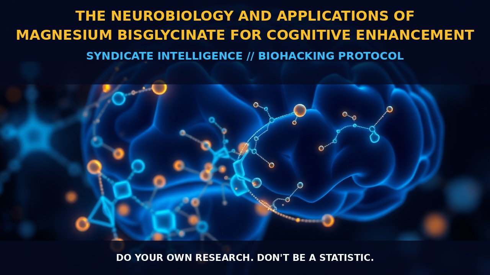

Neurobiology of Magnesium Bisglycinate: A Deep Dive into Cognitive Enhancement

The Neurobiology and Applications of Magnesium Bisglycinate for Cognitive Enhancement
Magnesium bisglycinate is a cutting-edge agent in nootropic research, recognized not only for its cognitive enhancement capabilities but also for its distinctive mechanism of action.
As a vital trace element within the Central Nervous System (CNS), magnesium plays an indispensable role in modulating synaptic plasticity, regulating neurotransmitter activity, and optimizing mitochondrial function. Its influence on neuronal excitability positions it as a key player in enhancing cerebral functions such as memory consolidation, attention, and processing speed.
The bisglycinate form of magnesium improves its bioavailability, ensuring efficient absorption while reducing gastrointestinal discomfort compared to other magnesium salts. This biochemical advantage makes Magnesium Bisglycinate an exceptional candidate for optimizing cognitive performance across various neurophysiological conditions.
1. The Mechanism
The neurobiological efficacy of Magnesium Bisglycinate can be attributed, in part, to its role in facilitating energy metabolism within neurons. By bolstering the production of adenosine triphosphate (ATP), it sustains neuronal activity and supports cerebral workload during high cognitive demands.
Furthermore, magnesium interacts with voltage-gated calcium channels, regulating intracellular calcium levels—a process fundamental to synaptic transmission and plasticity. These interactions are critical in modulating key enzymes, receptors, and ion channels involved in learning and memory processes. Consequently, Magnesium Bisglycinate enhances not only cognitive functions but also protects neurons against excitotoxicity, a potential neurodegenerative threat.
2. Biological Leverage
The biological implications of Magnesium Bisglycinate extend beyond its direct influence on neuronal function, encompassing systemic benefits that amplify its cognitive enhancing properties.
Magnesium's involvement in over 300 enzymatic reactions is crucial for glycolysis and gluconeogenesis, maintaining optimal energy homeostasis vital for cognitive processes. Its interaction with neurotransmitter systems such as GABA and glutamate underscores its pivotal role in modulating neural excitability and synchrony.
Additionally, Magnesium Bisglycinate has been shown to increase the expression of brain-derived neurotrophic factor (BDNF), a protein essential for neuronal growth, maintenance, and survival. This promotes neuroplasticity, enhancing the brain's adaptability and resilience against cognitive decline.
3. Tactical Implementation
Strategically implementing Magnesium Bisglycinate can markedly augment an individual's cognitive arsenal. For optimal outcomes, consider pairing it with nootropics like Bacopa monnieri or alpha-lipoic acid to create synergistic effects that bolster mental acuity and neuroprotection.
Initiate supplementation with a daily intake of 400-600mg, divided into two doses to maintain steady systemic levels conducive for cognitive enhancement without causing gastrointestinal distress. Adjust the regimen based on individual tolerance; high magnesium intake can lead to laxation in some cases.
The timing of supplementation also plays a critical role: ingesting Magnesium Bisglycinate with meals may enhance its absorption compared to taking it on an empty stomach. Consider an additional pre-workout or midday dose for those under stress or engaging in physically demanding tasks requiring sustained mental focus.
Incorporating magnesium-rich foods such as leafy greens and whole grains into a balanced diet provides a holistic approach to maintaining adequate magnesium levels, complementing supplementation strategies effectively.
Prostar Life Hack
Optimal magnesium intake requires both strategic dosing and a well-rounded dietary inclusion of magnesium-rich foods. Pairing Magnesium Bisglycinate with other cognitive enhancers can create a robust neuroprotective shield, promoting mental clarity and resilience against cognitive fatigue.
Prostar Life Hack
Prostar Life Hack
Optimal magnesium intake requires both strategic dosing and a well-rounded dietary inclusion of magnesium-rich foods. Pairing Magnesium Bisglycinate with other cognitive enhancers can create a robust neuroprotective shield, promoting mental clarity and resilience against cognitive fatigue.
[ AUTHOR: LEAD TECHNICAL RESEARCHER ]